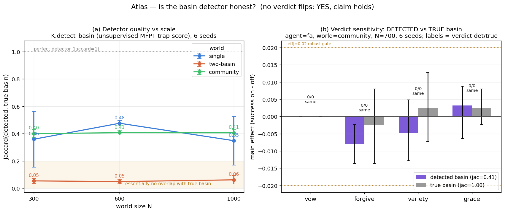

WORKGROUND · ATLAS
Atlas — Is the detector honest?
Mechanisms in the lab "target the detected basin" — a set
found by an unsupervised MFPT trap-score
(K.detect_basin), never the planted label. Two worries
follow. If the detector is rubbish, "we target it" is empty. And if the
conclusions only hold when we feed the agent the true basin, the
whole instrument is cheating. This slice measures detector quality across
worlds and scales, then re-runs a full factorial with the switch flipped
to see whether any verdict moves.
atlas/detector.json — backbone
lab5kit on the Rust engine.
Part (a): 3 worlds × 3 sizes × 6 seeds. Part (b):
agent fa, world community, N=700, 6 seeds,
full 2⁴ factorial run twice (use_detected True/False).(a) How good is the detector?
Jaccard overlap between the detected basin and the true basin, mean ± std over 6 seeds:
| world | N=300 | N=600 | N=1000 |
|---|---|---|---|
| single | 0.359 ± 0.204 | 0.476 ± 0.020 | 0.348 ± 0.178 |
| two_basin | 0.054 ± 0.019 | 0.049 ± 0.016 | 0.062 ± 0.031 |
| community | 0.400 ± 0.029 | 0.406 ± 0.017 | 0.406 ± 0.022 |
Mean Jaccard ranges from 0.049 (two_basin, N=600) to 0.476 (single, N=600). The honest reading is graded, not flattering:
- community — the emergent stochastic-block basin the lab actually cares about: the detector is stable and partial. ~0.40 Jaccard, essentially flat from N=300 to N=1000 (0.400 → 0.406) and tight (std ≤ 0.03). It recovers a consistent ~40% of the true community every time; it does not collapse with scale.
- single — best mean (up to 0.48) but unstable: std blows up to 0.20 at N=300 and 0.18 at N=1000. The 90th-percentile MFPT cut lands differently across seeds.
- two_basin — the detector essentially fails: ~0.05 Jaccard at every scale, near-zero overlap with the planted union. The trap-score concentrates on the deep-toll bottleneck, not the planted basin members.
So "the detector is good" is false in general. It is a weak, world-dependent estimator. That makes part (b) the load-bearing question: a weak detector is only a problem for the lab's claims if swapping it for ground truth changes the verdicts.
(b) Does DETECTED vs TRUE flip any verdict?
Agent fa, world community, N=700, 6 seeds.
Full 2⁴ factorial run twice on the same engine: once with the
detected basin (default, here Jaccard to truth = 0.412)
and once with the true basin (Jaccard = 1.000). Main effect = success
on − off, with seed-bootstrap 95% CI. Verdict is robust only if the
CI excludes 0 and |effect| > 0.02.
| factor | detected: eff [95% CI] | verdict | true: eff [95% CI] | verdict | flip? |
|---|---|---|---|---|---|
| vow | +0.0000 [+0.0000, +0.0000] | 0 | +0.0000 [+0.0000, +0.0000] | 0 | same |
| forgive | −0.0080 [−0.0136, −0.0024] | 0 | −0.0024 [−0.0136, +0.0080] | 0 | same |
| variety | −0.0048 [−0.0128, +0.0048] | 0 | +0.0024 [−0.0072, +0.0128] | 0 | same |
| grace | +0.0032 [−0.0064, +0.0088] | 0 | +0.0024 [−0.0024, +0.0080] | 0 | same |
The focus factors the task asks after — variety and
grace — do not flip. Neither does any other factor. For
fa in community at this budget every factor is a
null (verdict 0) under both the detected and the true basin.
The point estimates wobble (forgive moves from −0.0080 to
−0.0024; variety even changes sign, −0.0048 → +0.0024),
but all of it stays inside the ±0.02 / CI-includes-0 noise band,
so no conclusion moves.

Honest verdict
Two separate findings, kept separate:
- The detector is not "good". It is weak and world-dependent: a near-total miss on two_basin (~0.05), high but seed-unstable on single, and a stable-but-partial ~0.40 on the community world the lab leans on. Any prose that calls the detector accurate is overclaiming.
- But the "we're not cheating" claim holds — for this
cell. Swapping the detected basin for the true basin (Jaccard
0.41 → 1.00) moves no verdict for
faincommunityat N=700: variety and grace stay null, and so does everything else. The mechanism conclusions in this cell are not an artefact of feeding the agent the answer; they survive with the real label too. The honest scope: this is one (agent, world, N) cell — a strong existence check, not a proof across the whole atlas.
Net: the detector is a blunt instrument, and the lab should describe it as one — but here being blunt is harmless, because the verdicts do not depend on its accuracy. The "mechanisms target the detected basin" framing is honest precisely because targeting the true basin instead changes nothing.